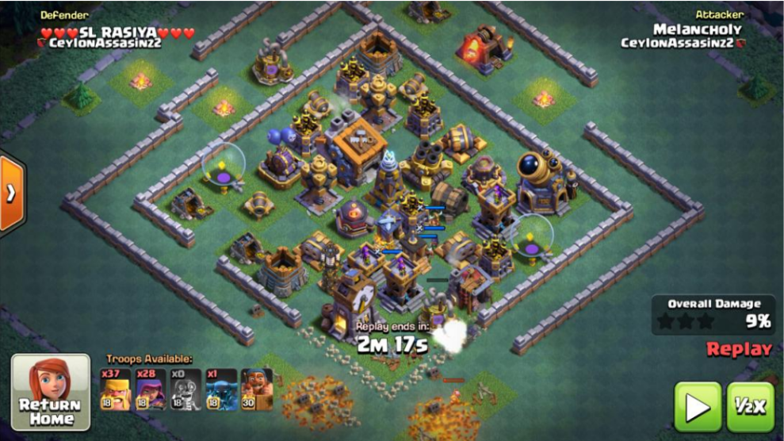
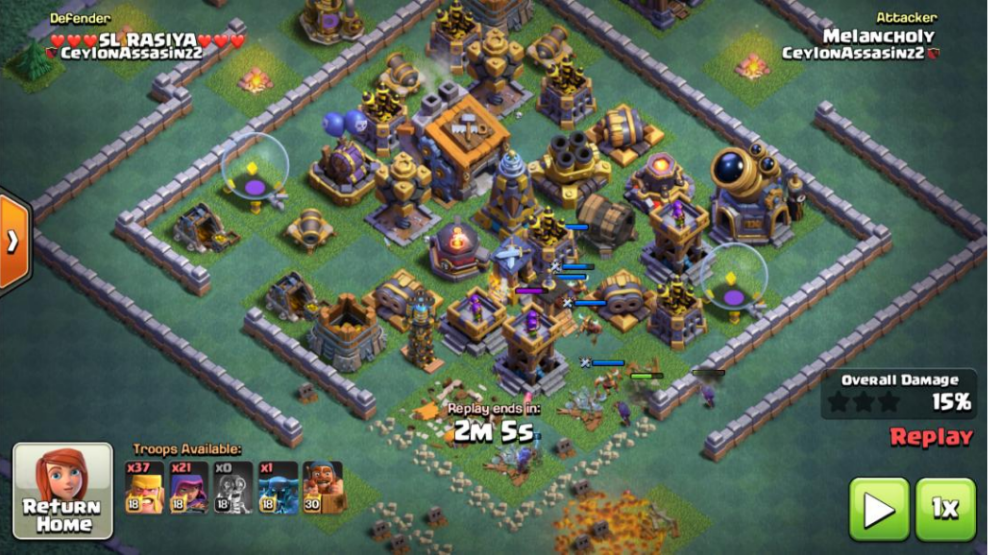
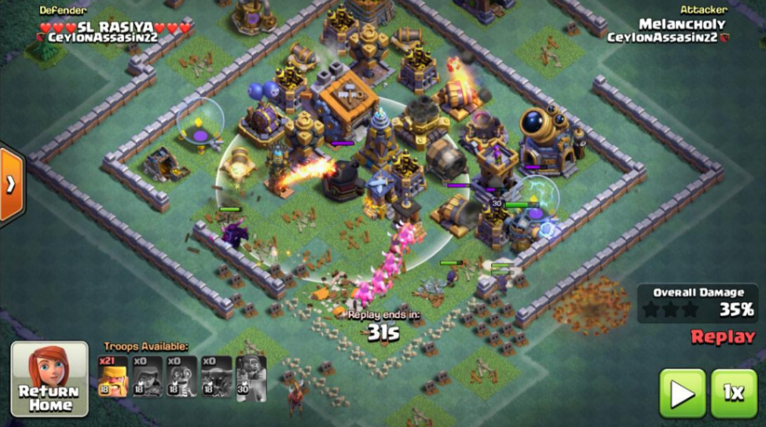
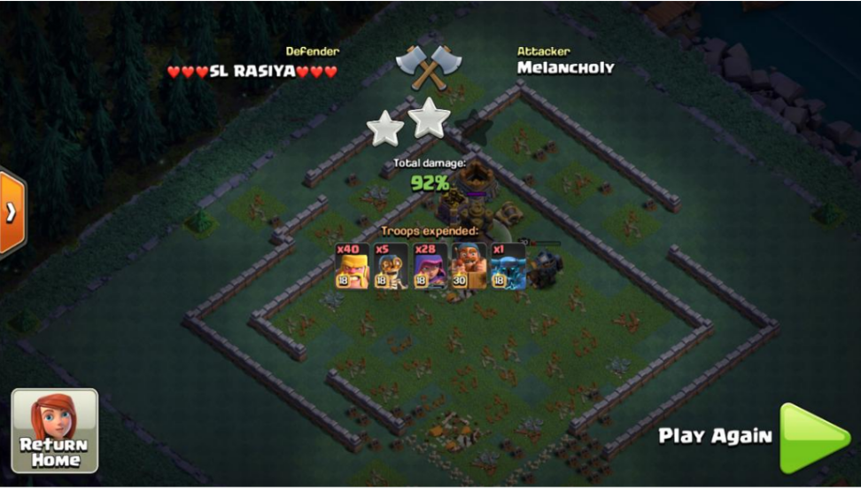

A little backstory: original base is from subig, this guy accepted my fc after copying my version
If any of you were wondering, the first time I used this strat was against subig, and I beat him 284-282 :)
Solution 1: 2barb/2arch/1bomber/1pekka | safeish potential 80+
1)Wallbreak
2)kill gp and high dps buildings
3)pekka to distract roaster, bm to distract gc and mortar
4)barbs down the middle and sides



